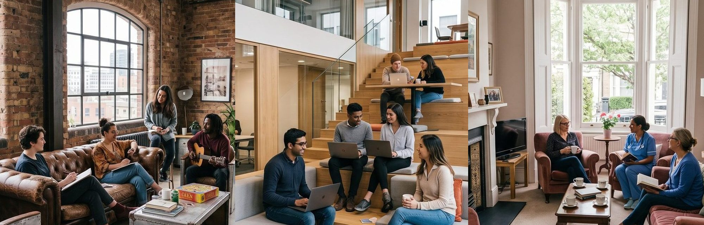

If you've lost your home, left an abusive relationship, come out of prison or come through addiction, you need somewhere safe before you can do anything else. That's what we're for — and you won't be doing the rest of it on your own.

Four people to a house, one person to a room. Somewhere you can shut your own door.
Your own bedroom in a safe, well-kept house, with a shared kitchen and living space. You're an adult living in your home — not someone being monitored. Nobody will manage your life for you.
You'll have a keyworker who knows your name and your situation. In your first 48 hours they'll sit down with you — not to fill in a form, but to ask where you are and what you'd like to work toward.
Some people arrive ready to get going. Others need weeks just to feel safe. Both are completely fine. Your support plan is yours, it's built with you, and it changes as you do.
You won't walk in to assessments and paperwork. We'll welcome you, show you your room, introduce you to the house, and leave you to breathe. The conversation about what you need can wait until you've slept.
For a lot of people who come to us, that first night is the first time in a long while they've had a door they can close and a bed they can call their own. We try to treat it that way.
We won't judge you for where you're starting. What we care about is where you're heading.
Whether you're on the street or in emergency accommodation, you need something stable before anything else can start. For many people this is the first safe place they've had in months.
A house that supports your recovery rather than undermining it, with access to peer support and mutual aid. Recovery isn't a straight line — a setback won't be held against you here.
Somewhere safe and confidential, with safety planning and an IDVA alongside you. We understand what it takes to leave. You'll be believed here.
Leaving without an address makes everything harder — probation, work, staying out. This is somewhere to build from, with support meeting your licence conditions.
This isn't a programme you get enrolled onto. There's no course to finish and no timetable to keep up with.
If you need somewhere safe, or you're supporting someone who does, get in touch. A conversation costs nothing.